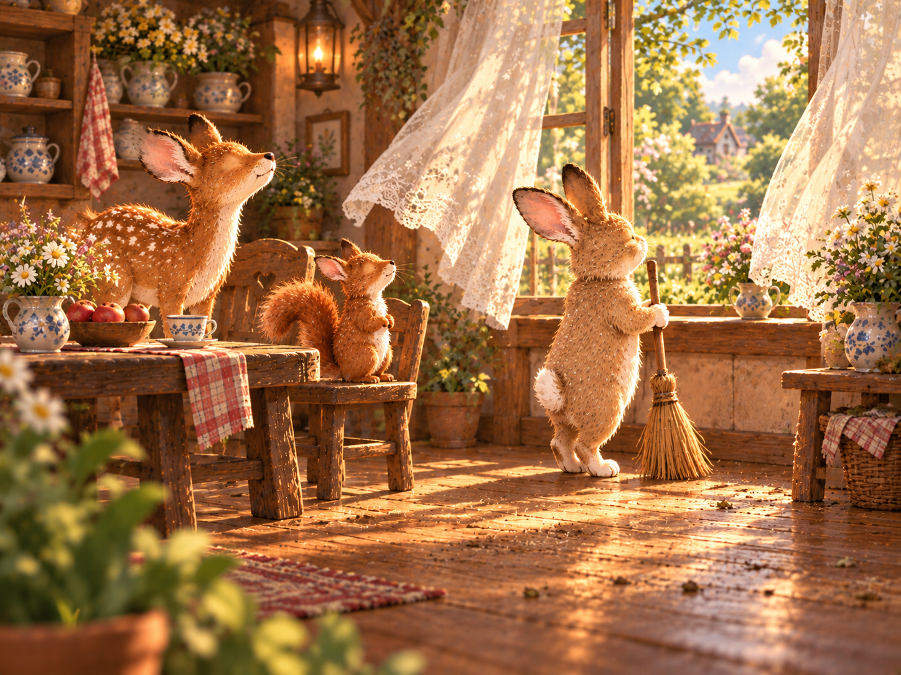
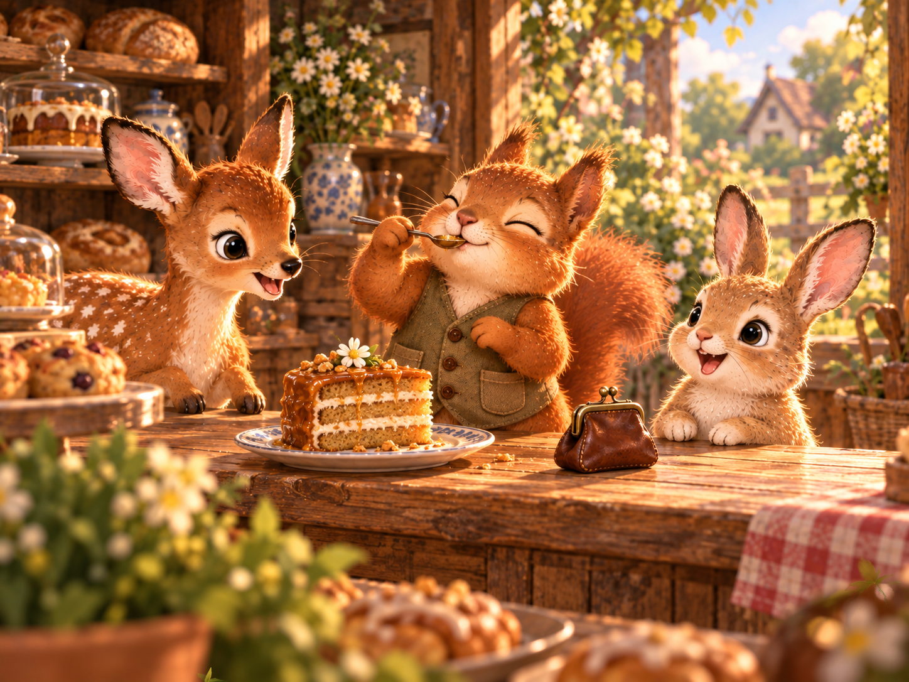
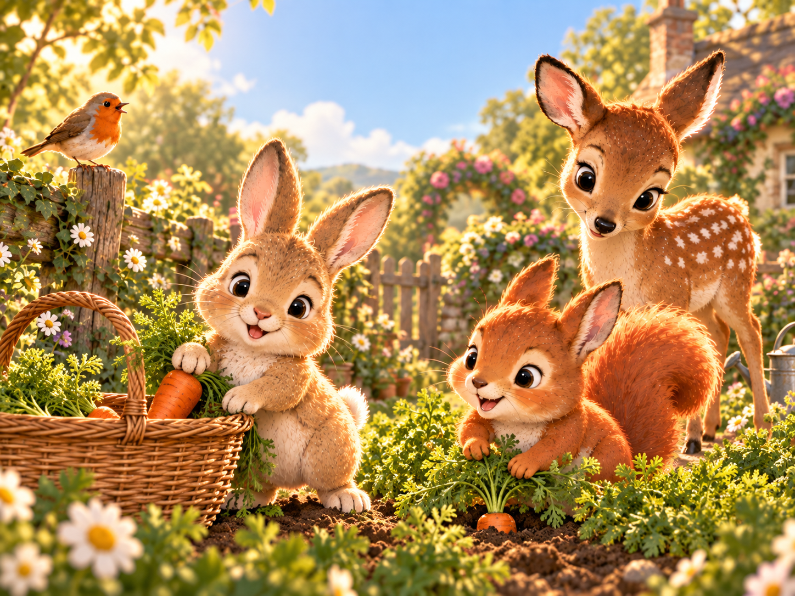
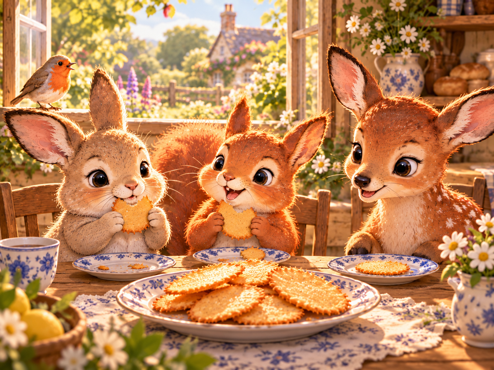
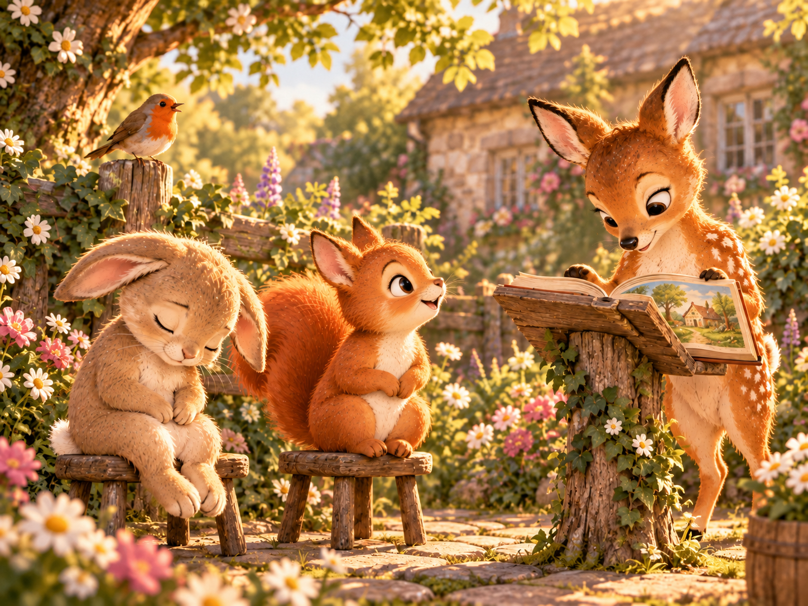

닿소리
홀소리
모음 하나 자음 하나 바뀌었을 뿐인데
모음
보글보글 · 부글부글
↗
동동 · 둥둥
↗
반짝 · 번쩍
↗
졸졸졸 · 줄줄줄
↗
퐁당 · 풍덩
↗
콩콩 · 쿵쿵
↗
방긋 · 빵끗
↗

살랑살랑 · 설렁설렁
↗

달달 · 탈탈
↗
토닥토닥 · 투닥투닥
↗
소곤소곤 · 수군수군
↗
톡톡 · 툭툭
↗

쏙 · 쑥
↗

바삭바삭 · 버석버석
↗

꾸벅꾸벅 · 꾸벅
↗